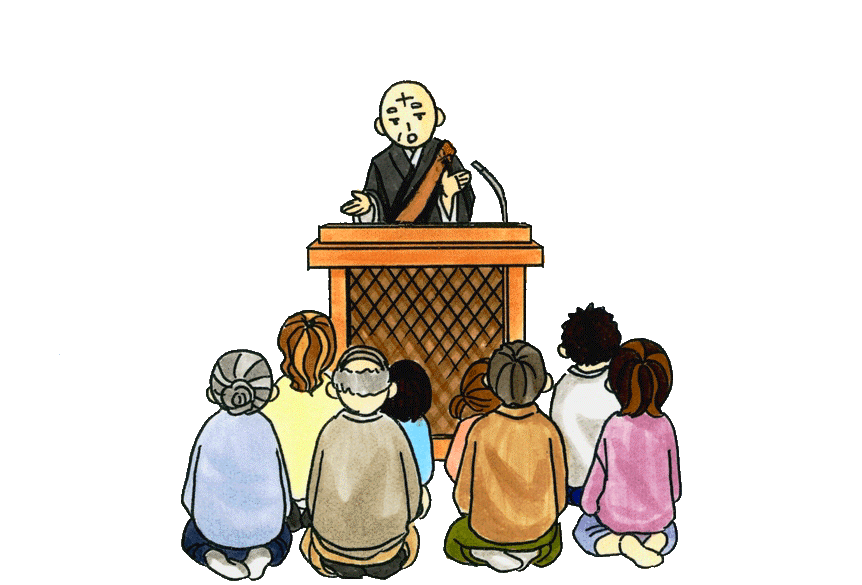

Dharma Talks
This page contains Dharma Talks and Essays by Shokai Kanai Shonin and Shoda Kanai Shonin. If you have any questions about these Talks please contact Kanai Shonin.
| June 2013 | The Miraculous Power of Words and Phrases or Koto Dama |
| Mothers Day 2013 | Mother's Day |
| February 2013 | Mandala Gohonzon as the Eternal Buddha |
| February 2013 | Setsubun Service |
| January 2013 | Happy New Year |
| January 2013 | Five Elements |
| 6 February 2011 | Japanese Pioneer in Las Vegas |
| 13 February 2011 | The Early Years of Nichiren |
| 27 March 2011 | Japan Will Arise Again from the Disaster |
| 3 April 2011 | Nichiren Buddhism in America |
| September 2011 | Daily Practice on the Lotus Sutra - lecture at Renko-ji, Italy |
Shokai Kanai Shonin's Offering:
In October of 2008 Shokai Kanai Shonin published his past Dharma Talks in a volumn titled "Dharma Essays".
It was April 16, 1964 when I first stepped on American soil. Since then, over fortyfour years have passed. To commemorate this anniversary, I would like to present my sermons, speeches, and lectures during those years. “Dharma Essay,” is a compilation of my sermons and lectures delivered at the temples in Salt Lake City, Utah, Seattle, Washington, and Los Angeles, California in the past. . . .
Shokai Kanai
|
|
|
|
|
|
|
|
|
|
|
On The Lotus Sutra Page you will find lectures on each chapter of the Lotus Sutra by Kanai Shonin.
The Newsletter of the Temple, Radiance also contains sermons, talks and essays.
Shoda Kanai Shonin's Offering:
Date |
Title |
10/04/07 |
Rissho Ankoku Ron |
01/10/09 |
Rissho Ankoku Ron Kechien Undo |
02/08/09 |
Buddha Nirvana |
05/09/09 |
Three Evils |
05/17/09 |
Incense |
06/21/09 |
Karma |
07/19/09 |
Light |
07/26/09 |
Three Treasures |
08/09/09 |
Meditation |
08/23/09 |
Hidden Temple |
09/13/09 |
Law of Change |
11/22/09 |
Komatsubara Persecution |
01/17/10 |
Compassion |
02/14/10 |
Having Faith |
05/09/10 |
Mothers Day |
05/16/10 |
The Four Desires |
06/26/10 |
Practice |
09/12/10 |
Tatsunokuchi Execution |
09/26/10 |
Practice |
10/10/10 |
Three Truths |
All contents within these Dharma Talks and Sermons is the copyrighted property of "Nichiren Buddhist Kannon Temple". Please obtain permission for use or reposting of these articles. Permission is granted under certain specific instances. Please contact the the Nichiren Buddhist Kannon Temple for further information. phone/fax (702)396-6276 email revkanai@gmail.com